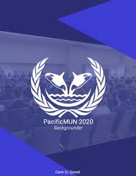
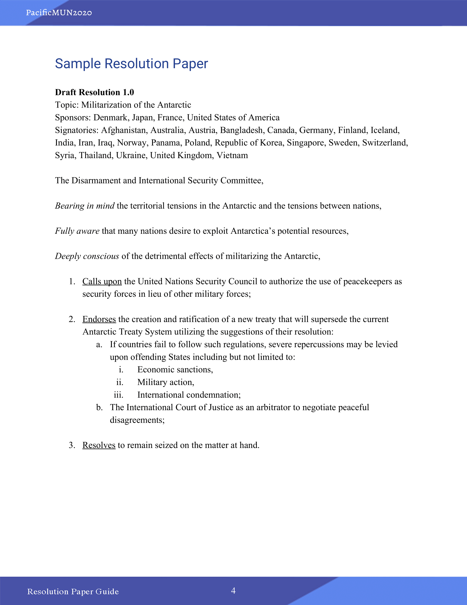

Papers Papers Papers!!! So Many PAPERS!!!
Resolution Paper! Backgrounder! Position Paper! So many differeny types of papers. What are they even for? Are they useful? Why should I even write one? or even read one?
These papers are essential to any adequate Model United Nations Conference. The backgrounder gives you background research done by your director, the position paper is a research
done by you to encourage you to research, and the resolution paper is the solution to your problem.
Click any of the images to begin.
Position Paper
As a first-time delegate, it can sometimes be hard to understand a topic. This is why it is important to research ahead of time and jot down notes. The perfect place to do that is indeed the position paper. This paper is generally submitted to your committee director during first committee session or a few days before the conference.Click the image to read about the position paper

Backgrounder
The backgrounder is predone research written by your dias members in an effort to prepare you, the delegate, in your journey of learning at the conference. Backgrounder are usually around 15 pages and are the cause of many directors across the globe as they take many hours of research and writing to complete. Click the image to read an example backgrounder

Resolution Paper
The resolution paper, the bane of all MUN conferences, the goal, the final step. The resolution paper is a series of clauses and sub-clauses written by you or another delegate. The resolution paper summarizes all that was discussed about and is the solution to the debate. The goal of the committee is to pass the resolution paper. This process takes a bit longer than you would expect though. Click the image to read about the resolution paper